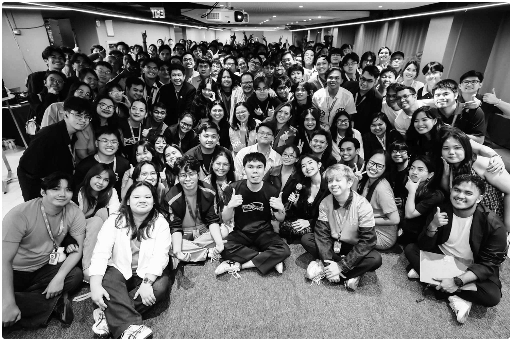

AWS Community Day Manila 2026
Volunteering for one of the country’s biggest cloud communities was my first real taste of the tech outside school. I worked on the official event page and certificate generator with a co-designer, but getting to usher, handle sponsors, and facilitate workshops on the actual event days was what made it special. I really enjoyed connecting with people and learning on the ground.